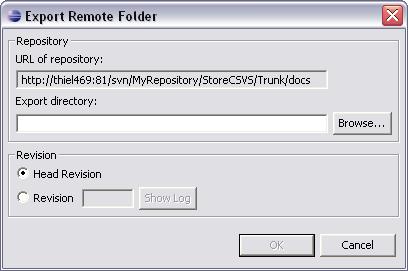

You may want to export one or more repository resources to a local or network location. This option exports (copies) the selected resources to the designated target location.

Type the name of the directory to which you want the resources exported, or click Browse to select the target directory. You can export the head revision or a specific revision. Click Show Log to see the log messages for the selected resource. The exported files are not under version control in their new target location.
Related Tasks
Related Reference